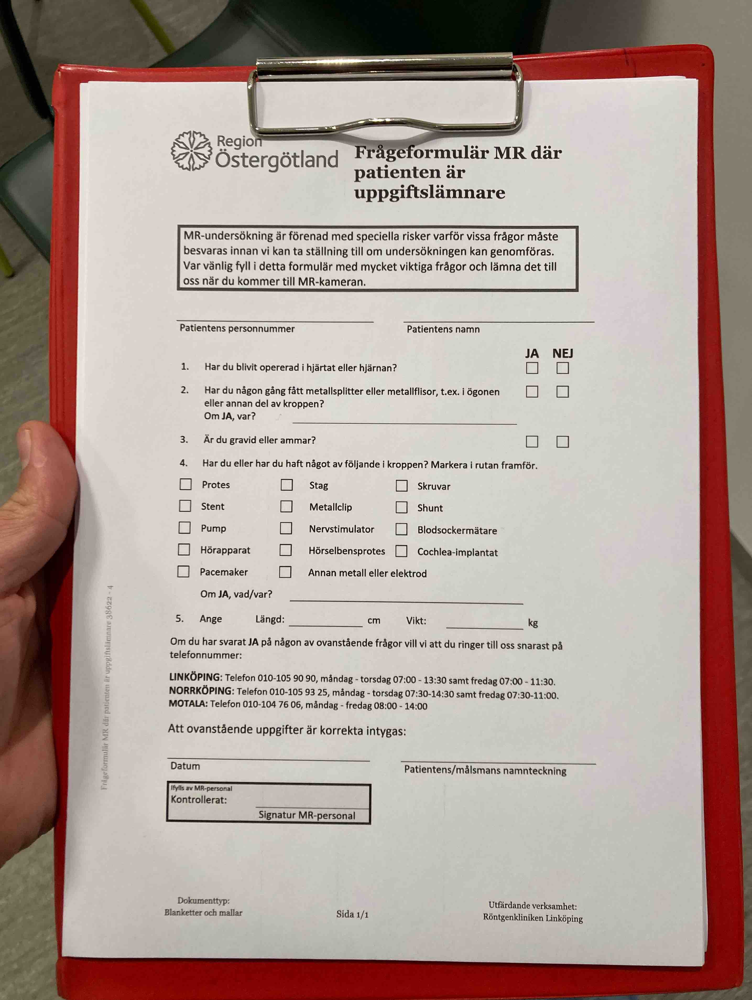
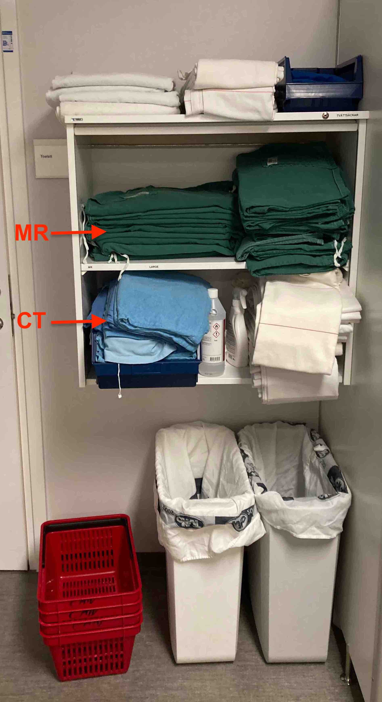
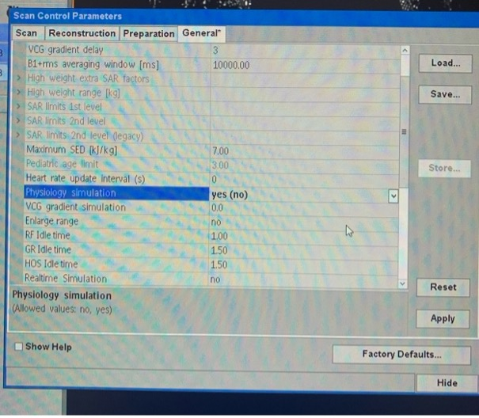
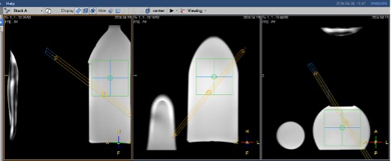
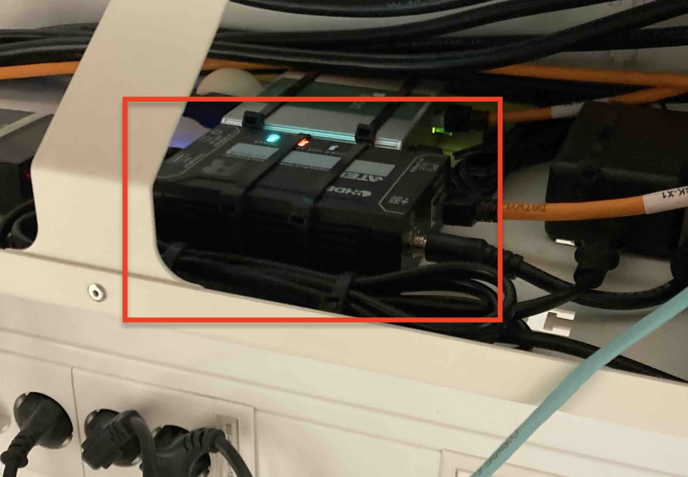

Operator Instructions – MR5, CMIV
Equipment
What scanner equipment is available?
Receiver coils
- Two 16-channel head coils
- 32-channel head coil
- 16-channel knee coil
- Multi Nuclear Spectroscopy (MNS) coil
- Phosphorus-31 and hydrogen coil
The two 16-channels head coils with their anterior parts in the coil cart.
Upper shelf: knee coil, lower shelf: 32-channel head coil.
Multi Nuclear Spectroscopy (MNS) coil
Phosphorus-31 and hydrogen coil.
Peripheral equipment
Philips Expression monitor
Shared with MR6, approval needed from clinic before usage.Main unit: MR400
Monitor unit: IP5
PPU (Peripheral pulse unit) + respiratory pillow and ECG
PPU and respiratory pillow are connected together. PPU and ECG boxes need batteries, that are located outside in the control room (see What equipment is in the Control room?).Trolley with PPU, respiration pillow and ECG.
PPU, respiration pillow and ECG.
fMRI equipment
Scanner room unit
Control room unit
- Glasses
- Response pad
Contrast agent injector system
Scanner room unit.
What equipment is in the Control room?
The Control room contains multiple equipments used for monitoring and controlling the MR scanner. You will probably not be using all of them, but it is important to know what equipment exists, so you know what to touch and what not to touch. An overview of the equipment in the control room is shown below.
- Satellite console screen
- Light control
- PPU + ECG batteries
- Quench button
- Electrical stop button
- Camera monitor
- Gas Alarm
- Medical gases monitor
- Constrast inj. Control
- Wavetrap (behind the screen)
- Hospital computers
- fMRI computer
- Cabinet with fMRI hardware and ergometer control unit.
- Camera interface box (to change the view of the patient inside the scanner)
What equipment is in the Technical room?
The technical room is a room located next to the scanner room and which houses several pieces of equipment that are needed for the MR scanner to function properly. It's important to have a basic knowledge of the various cabinets that exist in the technical room in order to know what to look for in case sometimes is not working properly.
Data acquisition, Cryopump cooling, and gradient amplifier cabinets
From the left: Data Acquisition Cabinets (ACC + DACC), Liquid Cooling Cabinet (LCC), and Gradient amplifiers double cabinet (GAC). The satellite console is located inside the DACC cabinet and the Cryopump inside the LCC cabinet.
The satellite console computer is located inside the DACC cabinet and connected to the satellite console screen in the control room (see previous section).
The Cryopump, located inside the LCC cabinet, is an important piece equipment in an MR scanner, and is responsible for cooling Helium. It is this pump that makes the repetitive noise (‘hm-tjuk-hm-tjuk-hm-tjuk…’). If not, please advise the MR-manager, or other staff that can take care of the condition.
Climate control
The climate in the scanner room is closely regulated by equipment in the technical room.
The opposite wall in the control room, where the dehumidifier (left) and humidifier (right) are located.
Electrical cabinets
Safety and main power switches sit in two cabinets, one for Philips equipment and one for the building.
Philips main distribution unit (MDU)
Building electrical cabinet
Where are all the safety buttons and fire extinguishers?
The figure below shows an overview of the MR5/MR6 floor plan at CMIV, including Quench button, Electric stop, Fire extinguisher.
Subject Preparation
How do I screen a subject?
-
Subjects are screened by asking them to fill in the Screening form, located in the preparation room. Make sure that they understand each question and offer assistance if not.
Location in preparation room.
Screening form. - If there is a "yes"-response to any of the questions, you need to investigate further before you bring the participant into the scanner room. Never proceed with a scan in case unless your are absolutely sure it is safe for the subject..
- You can look at RÖs documentation for Low risk implants which may offer some support.
-
Make sure to sign the Screening form after controlling it. The form should than be archived, how this is done depends if there exists a referral or not:
-
If a medical referral exists, the form should be placed in the Research form document folder (see picture below), located on the administrative desk behind the control desk. The form will then be scanned by administrative personal and matched with the referral.
- If no referral exists, you yourself are responsible to disposing or archiving the Screening form, depending on what you have written in your ethical permit.
-
If a medical referral exists, the form should be placed in the Research form document folder (see picture below), located on the administrative desk behind the control desk. The form will then be scanned by administrative personal and matched with the referral.
What are subject clothing requirements?
-
The general rule is that subjects should be dressed in hospital gown.
 - They get changed in the waiting room where lockers also exist for them to store their personal belongings. The key card can be brought into the scanner room.
- Underwear and socks can be worn as normal as long as nothing metallic is sewn into them (e.g., bras with metallic clasps on the back).
- They must have removed anything remotely metallic before they go inside the room (jewelry/watches/hairpins/keys/EVERYTHING). Even the most miniscule objects can be dangerous and harmful. Please check this carefully.
What ear protection is available?
In general, for optimal noise-cancelling, you want two barriers of protection. Any of the two options below can be combined:
-
Using traditional ear plugs.
-
Using radio headphones (also allows the subject to listen to something while in the scanner).
-
Using two-component mold which hardens when mixed can be a good alternative when, for some reason, the radio headphones do not fit inside the coil.
Two components, usage 50/50.
Mixed together.
When homogeneous, divide into two and place in ear before it hardens.
How do I communicate with a subject?
- There exist microphones and speakers inside the MR bore which allows the subject to hear and speak with the MR operator out in the control room.
-
The communications from the control room is done via the Dock placed next to the satellite console screen.
- The Dock speaker needs to be enabled in order to hear what the subject in the scanner room is saying (see figure above). It's default setting when disabled is to turn down the volume low but not complete off, so that the operator in the control room always have sound-contact with the scanner room.
- For the operator to talk to the subject, it's import to first enable the speaker on the "Dock" so that any reply can be heard, then press the microphone button (see above) to speak.
-
For the subject to be able to call the attention of the operator while in the scanner, he or she must have been given the alarm horn

-
When the alarm horn has been pressed, an alarm will sound and the "Dock" will light, notifying the operator in the control room. Turn off the alarm by pressing the blinking red button and start communicating with subject.
- Important: Information how the subject can call for attention and communicate with operator should be communicated prior to positioning the subject in the scanner.
-
The "Dock" also has an emergency button for the operator (red button with a triangle in the picture above) to quickly cancel the scan. When pressed, the scan will be stopped and the patient table will be released so it can be manually pulled out of the scanner.
To reset the alarm, you need to go into the scanner room and use the reset button (button 9) on the bore control unit, see How do I position a subject in the scanner? below.
How do I position a subject in the scanner?
Showing the bore control unit, with each button indicated by a number
To position a subject follow these steps:
- Use button 3 on the control unit to lower the tabletop and make it easy for the subject to get onto to it. Ask the subject to lay down and then raise the tabletop to its highest position.
- Press the laser button (1) to enable the cross indicator to light up over the patient.
- Use the button 3 to adjust the subject position so that the cross indicator is placed over the region of interest (e.g. the heart).
- Then press the tabletop button (2), so that the tabletop will automatically move inside the bore, and the position indicated by the laser will be aligned with the isocenter. Always good to warn the subject before moving the table.
Other buttons on the bore control unit are used to:
- To start and stop a scan from inside the camera - Button 4 and 5 respectively
- To speak the patient from inside the camera - Button 6 (this stops the music in the headphones)
- Adjust ventilation, the volume, and the light - Button 7
- Release the tabletop to transport a patient - Button 8
- Restore the status after an emergency - Button 9
- Stop the scan and release the tabletop - Button 10 (if something goes wrong and the patient needs to be taken out)
Running a Scan
How do I log into the scanner?
There are different users that can be used to log in into MR5, depending on the type of scan. For clinical purposes “mruser” is used, for service “mrservice”, and for research “mrresearch”. You will probably be using “mrresearch”, talk to your supervisor at CMIV to get the log in credentials.
After you have logged into the system, run the console application by pressing "Start".

How do I activate patches?
Several research projects at CMIV might require patches, i.e. compiled lines of code. To activate a patch, click on “System” and then “Activate Research Patch”.
You can now choose the required patch and activate it. The “mrresearch” log in credentials are required to activate the patches.
To deactivate the patch click on “System” and then “Deactivate Research Patch.
IMPORTANT! ALWAYS deactivate the patch before exiting the system!
How do I register a subject on the scanner?
Click on “Patient” and then “New Patient” (F2).

Insert the following mandatory information:
- Patient Name
- Registration ID (personnummer if a subject, something else if a phantom)
- Date of birth will be automatically filled if the registration ID is a date/personnummer
- Patient Gender
- Patient Weight
- Implant
How do I conduct a scan?
Loading sequences
Several sequences are usually needed during a scan. In the example image below, you can see the list of the scans already performed in blue (i.e. SURVEY_BFFE and 4DFLOW rest), and in grey scans not yet runned (id2_venc70_off and another 4DFLOW rest).
To add a sequence to the list, click on the green plus symbol “Add new scan item” on the left-hand side of the screen (under the list of scans). This will open the "ExamCards" window in the lower part of the screen.
Drag and drop the desired sequence onto the “List of scans” window (in this example the desired sequence is in the folder “Heart”).
Typical T1 mapping scan
What follows next depends on your specific study protocol at the MR sequences therein. To give an example, a T1 mapping scan is described below.
A T1 mapping scan (of a phantom) typically involves the following steps:- Position the phantom in the scanner, as explained in the previous sections.
- Register a new patient.
- Load in the sequences (a test protocol has been created and stored in //Hospital/test_protocol_knappology)
-
Go to "System" -> “Edit Scan Control Parameters…”, and set "Physiology Simulation” to yes under “General” (this will simulate an ECG and a respiratory signal when a phantom is used).

- The first scan in any sequence (and also in our test protocol) is typically a survey scan which is used to orient future scans. Run the survey scan by clicking on the green button “Start Scan”.
- The images from the survey scan should automatically be shown in the "View window" after completion which you can now use to plan the next scans.
- To plan a scan, double click on it (in our test protocol the next scan is the T1 mapping scan called "T1 enhanced").
-
Now you can decide the geometry and location of the scan. The yellow box indicates the shimming box, where the B0 is kept as most homogeneous as possible. It should cover the whole region of interest. The blue slab represent the single 2D slice that will be acquired.
- When you are satisfied, click "Accept".
- Run the T1 mapping by clicking on the green button “Start Scan”.
Measure T1 in a ROI
A common task it to measure the signal in a specific region of interest (ROI). We describe the procedure bellow.
- Double click on the T1 image to open it in “Review” mode.
- Switch to the phase image (T1 cannot be measure on the magnitude) by clicking with the mouse and performing a diagonal move.
-
Open the “ellipse” measuring tool.
-
Now you can draw an ellipse and measure the T1 in ms.

How do I move my slices?
To move the slices and field of view (FOV) press on the central circle of the slice (yellow box) and drag. You can use each of the three orientation, AP (anterior-posterior), FH (feet-head), and RL (right-left).
To change the orientation of the FOV, click on the small square on the corner and drag to the desired inclination.

It is also possible to change the geometry of the FOV also in the Off/Ang section of the sequence.
How long will my scan take? Where is the scan time shown?
The interface shows the scan time for the whole scan and for the specific sequence, see How do I conduct a scan?
Note: The scan times shown do not include the extra time due to respiratory navigator (when used), or due to arrhythmia rejection (when using cardiac gating).
How to abort a scan and evacuate subject?
Aborting a scan
In case you need to abort a scan, for example if the subject is panicking or for any other reasons needs to be evacuated, it is good to practice the steps laid out below:
- The first thing to do is to stop the scan by pressing the red stop button (on the bore control unit in the scanner room or on the communication Dock in the control room).
- Next, communicate with the subject so that he/she knows that you have heard them and that you are getting them out the scanner.
- Before running into scanner room, make sure not to bring with you anything magnetic, which could be easily forgotten in stressful situations.
- In the scanner room, the fastest way to get the subject out of the scanner is to press the button "release tabletop" (button 8) on the bore control unit and manually pull the table out, see How do I position a subject in the scanner?
- Make sure to talk to the subject in order to reassure them that you are there and help them relax.
Evacuating a subject
In certain situation you might have to evacuate or move a subject from the scanner while they are still on the scanner tabletop. To this end there is a trolley (stored in the corner of the scanner room) that can be used to mount under the scanner tabletop to remove it from the scanner. To this, follow the steps below:
- Start by releasing the tabletop from the scanner. This done by first moving the tabletop out the scanner and then pressing button "release tabletop" (button 8) on the bore control unit, see How do I position a subject in the scanner?
-
Next, place the trolley under the tabletop. Note, the tabletop must be in the highest position (adjust if needed with button 3 on the bore control unit).
Place the trolley next to tabletop.
Slide the trolley in under the tabletop. -
Lower the tabletop (using button 3 on the bore control unit) onto the trolley.
-
The trolley will automatically hook up to the tabletop, and it will be possible to move it away from the scanner.
Note: Never sit, or put any weight on the scanner table when the tabletop is not mounted! The symbol in the picture below means “No weights”.
Transferring Data and Protocols
How do I send my data to Forsknings-PACS
?
-
Open the "Patient Administration" panel in under "System" (or press F4). Select the exams you want to transfer.
-
Select "Forskning-PACS (SECTRA)" in the drop-down menu under the PACS icon and then press the PACS icon to send.
- When you are done, put "PACS" back into the dropdown menu.
How do I send my data to XNAT
?
-
Open the "Patient Administration" panel in under "System" (or press F4). Select the exams you want to transfer.
-
Select "XNAT_CV" in the drop-down menu under the Network icon. Then press the Network icon to send.
How do I export my data to an external drive?
Please Note: USB Drives may only be plugged into the satellite console. They should never be plugged into the main host PC. Follow these steps only on the satellite console!! This protects the host PC from picking up viruses and malware.
- Ensure your USB drive is plugged into one of the USB ports on the side of the satellite console screen or directly into the satellite console computer (see What equipment is in the Technical room?).
-
Open the "Patient Administration" panel in under "System" (or press F4). Select the exams you want to transfer.
-
Click "Disk Files" in the destinations menu.

-
The "File Export" window will open to let you choose the format of the files (e.g. DICOM enhanced or classic) and the destination folder (Browse). Click "Proceed" to export the data.
- Note: Enhanced DICOM are in multiframe format, e.g. one file that contains multiple images. Classic DICOM implies that one file is exported for each image , e.g. if you have a cine image resolved in 30 timeframes, you will have 30 DICOM files.
How do I export scanning info from the scanner?
Sometimes you will want to export information from the camera regarding your study protocol, slice prescription or images generated using the image viewer. We here describe some common strategies.
Export protocol as text
To export a protocol (exam card) as a text file, load the exam card, right click on it and then "Save Protocol to Text File...".
Troubleshooting
How can I tell what the scanner is doing?
The text shown in the drop-down menu under the sequence will tell you which step the scanner is currently performing (or if an error/conflict has occured).
How do I reset the table?
Please, refer to the section How do I position a subject in the scanner.
Why is the satellite console screen not showing a picture?
The satellite console screen (located in the control room) is connected to satellite console computer (located in the technical room) by a HDMI extender located underneath the desk in the control room.

Sometimes, for example if the HDMI cable to the screen has been disconnected, the extender needs to be restarted. This is done by simply unplugging the power coord to the extender, wait a few seconds, and then plug it back in. The connection between the satellite console screen and satellite console computer should be restored.
The scanner doesn't work properly, how can I tell what is wrong and what can I do?
Sometimes a certain combination of settings does not work, and in this case we get "conflicts", shown in the interface as red exclamation marks. Opening the drop down menu on the bottom will give more information about the conflict.
By opening the "Conflicts" menu (last item in the menu list) a more detailed explanation will be shown and hopefully a suggestion how to resolve the conflict.